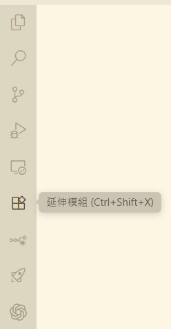
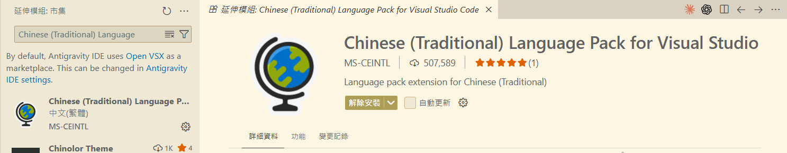
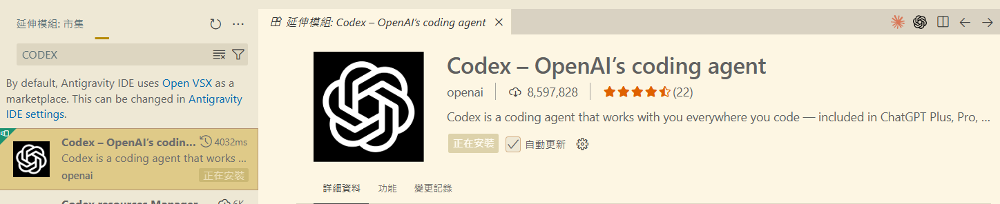
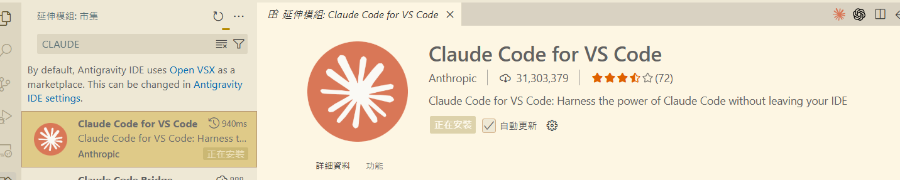

繁體中文語言包
把選單、按鈕和提示轉為繁體中文，操作更容易。
先把介面變成看得懂的繁體中文，再選擇一位 AI 程式助理。這份圖文說明依照你的安裝畫面整理，照著做就能完成基本設定。
Antigravity 的「延伸模組」就是替 IDE 加上新功能的小工具。剛開始使用時，安裝繁體中文語言包，再從 Codex 與 Claude Code 裡選一個，即可開始使用。
把選單、按鈕和提示轉為繁體中文，操作更容易。
在 IDE 裡使用 Codex 協助讀程式、修改檔案與執行工作。
在 IDE 裡使用 Claude Code 協助理解專案與撰寫程式。

滑鼠移到圖示時會顯示「延伸模組」。也可按 Ctrl + Shift + X 開啟。

例如輸入 Chinese (Traditional) Language Pack、Codex 或 Claude。

確認作者、名稱和圖示，再按「安裝」。出現「正在安裝」時請稍等。
你的畫面顯示 Antigravity 預設使用 Open VSX 市集。這是正常的擴充功能來源；只要從搜尋結果中確認名稱與發行者即可。
你的截圖顯示發行者是 MS-CEINTL，描述為「Language pack extension for Chinese (Traditional)」。這個模組只負責把介面中文化，不會替你寫程式，也不需要額外登入 AI 帳號。
兩個模組都能在開發過程中提供 AI 協助，但它們屬於不同公司與服務。請按你的使用需求選擇，而不是因為看到搜尋結果就全部安裝。
截圖中發行者是 openai。適合已使用 OpenAI／ChatGPT 生態系、並希望在 IDE 裡與 Codex 合作完成程式工作的使用者。

截圖中發行者是 Anthropic。適合已使用 Claude 服務，並希望把 Claude Code 直接整合到 IDE 的使用者。